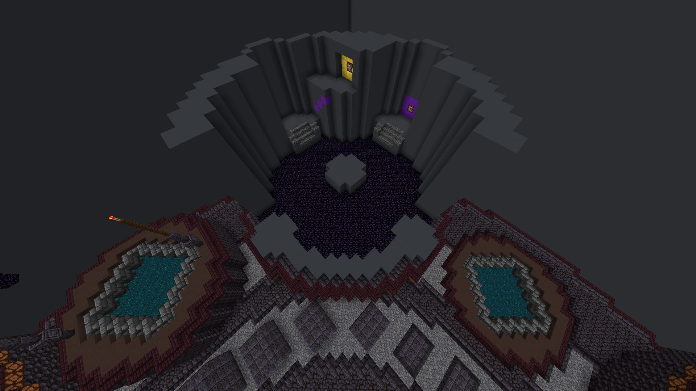
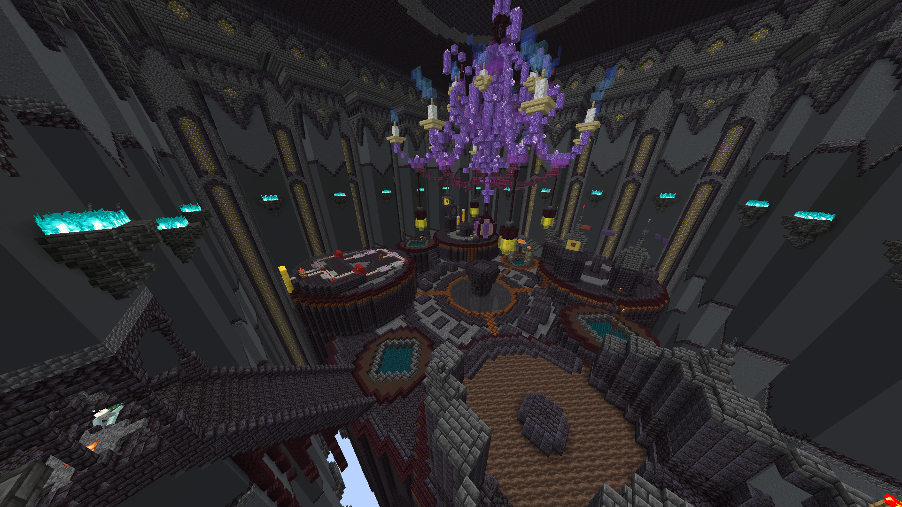

Nick Malone
Game Designer
Nick Malone
Game Designer
Teams of 4 must get through puzzles that consist of parkour and redstone all while having a primary mechanic of them turning into blocks when holding shift. This mechanic will bring players up to elevated areas and force people to go back and forth to bring a player to the exit portal. This project was part of a Twitch Rivals Minecraft minigames event. Temple of the Elements had different themes for each iteration with this one focused on Earth as a puzzle minigame.
Puzzles were split into separate levels with increasing difficulty and gradually introducing more mechanics while reinforcing the primary mechanic of requiring players to turn into a block and help their teammates reach the portal. Twitch gave us a 20 minute time slot for running this puzzle mini game which is the reason we ended up making only 10 levels. The solutions aren’t hidden or require the players to go searching for it. The pathing, colors, and lighting helped guide teams to the portal and didn’t throw any curveballs to try confusing them. With the timer being a factor, the last thing we want is for someone to get stuck.
A lot of our time spent on this project was discovering the many ways we can utilize the concept of a player turning into a block. Players can’t turn into a block in mid air or on top of another player’s block, so there’s limitations on what we can do. We didn’t want players to always be left behind in the puzzles so if a solution required someone to sacrifice and stay behind, the puzzle would be short enough where it wouldn’t cause an issue. There’d be some levels where the left behind player can still control the level’s redstone contraptions to guide the players further.
Our mini-scale layouts were designed to be play tested early on before determining if the puzzle is ready to be scaled up to a bigger version which will make the levels feel exciting and for the spectators to have plenty of space to work with. Plenty of concepts were made and scrapped, even some that were finished didn’t make the cut for the final 10 levels.
The final level is supposed to surprise the players if they reach it before the timer hits. It consists of 4 levers which count towards your score and each level is at the end of a puzzle which takes elements of previous puzzles. The biggest catch with the final level is that there is an invulnerable boss that causes an earthquake. Players will die if they don’t turn into a block to avoid the damage and with this, some areas prevent players from turning into a block and can set them back a bit.
 We were able to compile 10 of our best levels to showcase in the event which turned out well. Nearly half of the teams made it to the final level before the timer expired which is right about where we wanted, especially knowing that a lot of teams had casual players who may not be well versed with Minecraft mechanics. It provided great moments on the livestream and an exciting finish for those who made it to the boss room competing for the most levers in the fastest time for a higher placement.
Jump to 3:42:30 in the Twitch VOD.
Player POV